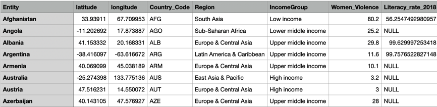

Overview of the Project:
The Narrative project shows the socio-economic indicators such as Women Literacy Rate and Women Violence Rate can affect their participation in Employment in terms of regions in the world. The World choropleth map will be showing an average Education rate 2018(the most updated data) and violence rate in the country for 2019. The first bar charts demonstrate the female Literacy Rate, and the last bar chart shows the average female violence rate in terms of income group, sorting through the highest to lowest percentage. The previous project I have worked on, the Exploratory project, is "How Women's Fertility and Employment Participation Rate are Shaping World Economic." This narrative project breaks down more of the Exploratory Project. Its primary focus is to show the education rate and how safe the country is for women compared to low to high-income countries. The data have collected from Visit Organisation for Economic Co-operation and Development.org! . I have collected, cleaned, and combined data . The data involves only 135 countries since some countries of have missing data, so I have deducted those from this project. For data visualization, I have used D3 and JavaScript. The codes I have used from the Interactive Data Visualization class tutorial, and an online resource Visit D3 Graph Gallery.com! . The data visualization shows that women with less education rate and more violence towards women refrain them to participate in employment in a country.
Here are a few of the records of the data.

Indicators:
Some Prominent indicators have given below:Entity: It represents each country. Code: It represents each country code. longitude: It represents the geographic, logitude of the country. lattitude It represents the geographic, logitude of the country. Male_Female_Ratio_Employment: It represents the percentage of women's employment participation with male employment participation in each country for 2019. Women_Violence: It represents the violence towards women in the country for 2019. Literacy_rate_2018: It represents the literacy rate of each country for 2018. Region: It represents the region in which the country belongs. IncomeGroup: It represents the income group in which the country belongs based on the GDP per Capita.
World Choropleth Map: (Still Working in the code....)
In the Choropleth Map,....... More discription is comming......
Bar Charts:
More discription is comming.....